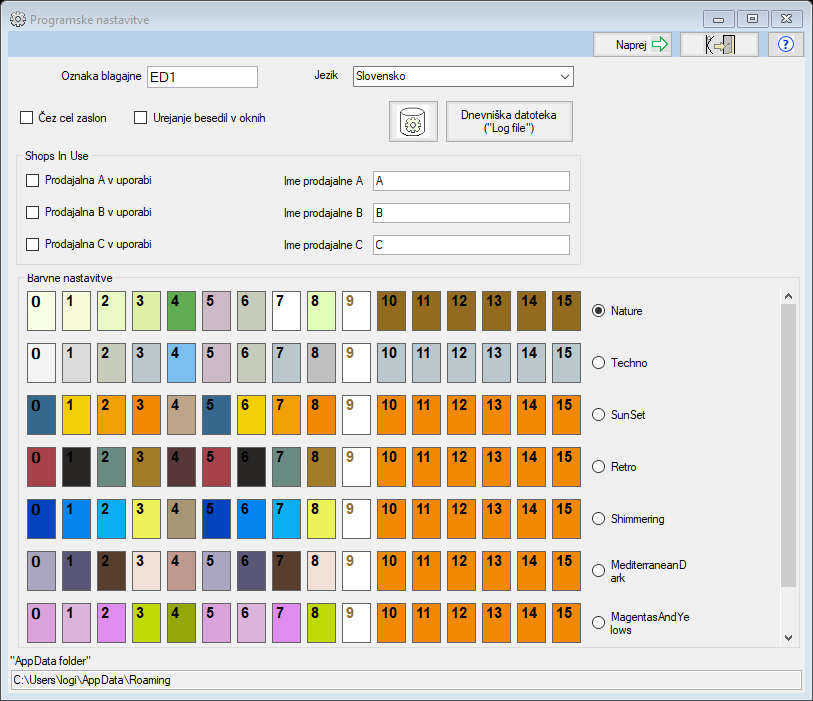
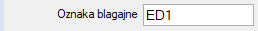
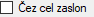
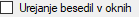
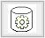
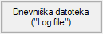
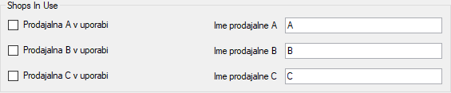
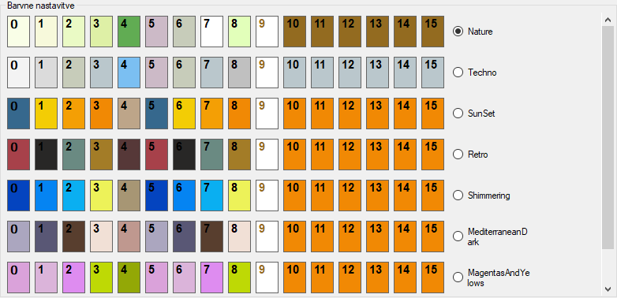

Programske nastavitve
Oznaka blagajne
Oznaka elektroske naprave pomeni oznako naprave na kateri so izdani dokumenti
(računi, predračuni itd..).
Oznaka elektroske naprave se izpisuje v številki računa in je njen sestavni del.
Glede na to da POS tiskalniki tiskajo večinoma na papirni trak, ki ni širši od 80mm
predlagamo, da je oznaka elektronske naprave čim krajša.
Izbira jezika

Zgoraj prikazani spustni meni nam omogoča, da spremenimo jezik programa Tangenta.
Za sprememba jezika morate potem ponovno zagnati program
Čez cel zaslon
Če odkljukate kvadratek levo od napisa "Čez cel zaslon" se bo glavni dialog v
katerem urejamo dokumente (račune in predračune) razširil čez cel zaslon ob vsakokratnem zagonu
programa.
Spreminjanje napisov v dialogih programa Tangenta
Program Tangenta lahko tudi sami oblikujete tako, da besedila na dialogih lahko
spremenite sami. V kolikor odkljukate kvadratek na levi strani "Urejanje besedil v oknih"
se bo aktiviralo delovanje programa Tangenta tako, da vam bo omogočeno neposredno spreminjanje napisov na
gumbih, oznakah itd..
Nastavitve podatkovne baze
S klikom na zgoraj prikazani gumb, se odpre dialog za nastavitve podatkovne baze.
Dnevniška datoteka
Dnevniška datoteka, je lokalna datoteka na vašem računalniku v katero se zapisujejo
kritični dogodki pri uporabi programa Tangenta.
Dnevniška datoteka služi v veliko pomoč pri odpravi na novo ugotovljenih napak in pomanjklivosti
v delovanju programa Tangenta.
Prodajalne v uporabi
Izbrati morate vsaj eno prodajalno.
Ime prodajalne lahko tudi spremenite. Pri tem pa velja, da se bo v navodilih
in pomoči programa Tangenta še naprej uporabljalo osnovno ime prodajalne. ki je lahko le A,B ali C.
Barvne nastavitve
Spodaj so prikazane barvne nastavitve. Barvne nastavitve prvenstveno delujejo na barvno obliko dialogov za vnos podatkov v podatkovno bazo
